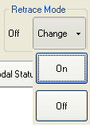

Use the Retrace Mode Buttons of the
Use the Retrace Mode Buttons of the You can activate or deactivate retrace in the Retrace Mode section of the CNC Operator Interface. The Retrace Mode section is available only when the task is running or paused.
To activate Retrace mode, click Change and then click On.

If you activate Retrace mode while the program is executing a command, the controller immediately decelerates motion. When the axes reach zero velocity, the controller enters Retrace mode, and the task is placed in feedhold. To continue executing the program in reverse, click Cycle Start.
If you activate Retrace mode while the program is paused, the controller stays paused until you click Cycle Start.
To deactivate Retrace mode, click Change and then click Off.
If you deactivate Retrace mode while the program is executing a command, the controller immediately decelerates motion. When the axes reach zero velocity, the controller exits Retrace mode, and the task is placed in feedhold. To continue executing the program in the forward direction, click Cycle Start.
 2001-
2001-